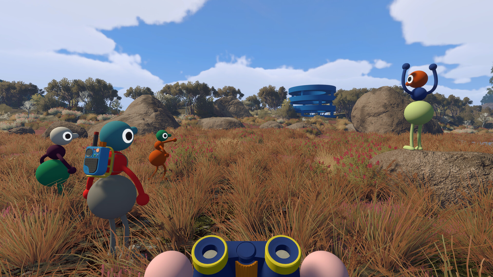
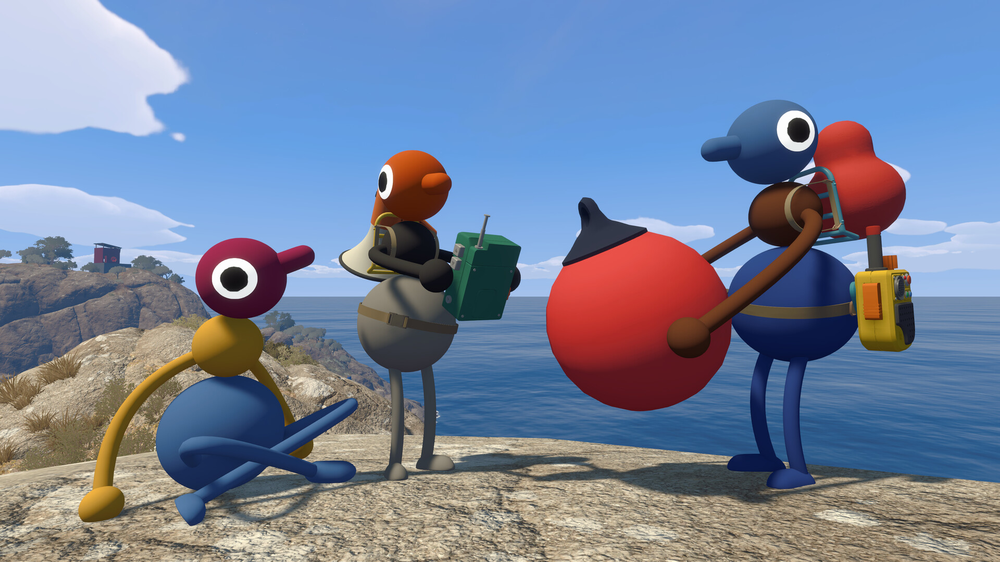
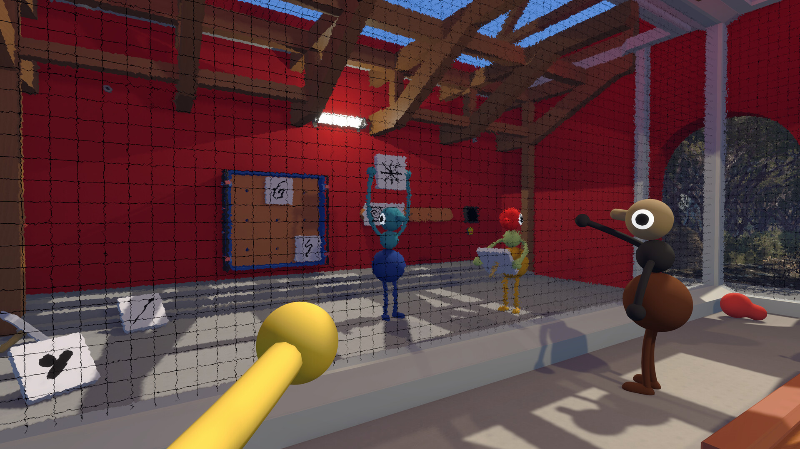

빅워크 Big Walk 6일만에100만장 PS플러스무료로시작하는법
8월 4일에 나온 협동 어드벤처 게임 '빅 워크(Big Walk)'가 딱 6일 만에 100만 장을 넘겼다는 소식이 떴는데요, 이거 보자마자 무슨 게임인가 하고 바로 찾아봤어요. 알고 보니 2019년에 화제였던 '언타이틀드 구스 게임'을 만든 그 개발사 신작이더라고요. 그냥 신작도 아니고 스팀·에픽게임즈 스토어·PS5·닌텐도 스위치2로 동시에 나온 데다, 마침 8월 PS 플러스 월간 게임에도 껴 있어서 지금이면 돈 한 푼 안 쓰고 시작할 수 있는 타이밍이거든요. 생각해보면 협동 게임인데 싸울 게 하나도 없다는 컨셉 자체가 요즘 흔치 않아서 더 눈길이 가더라고요. 오늘(8월 18일) 기준 출시 딱 2주째인 빅 워크, 뭐가 재밌다는 건지랑 무료로 받는 법까지 한 번에 정리해볼게요.

스팀 상점 페이지에 걸려 있는 빅 워크 공식 키비주얼이에요.
이미지: 스팀 공식 스토어 페이지
빅 워크가 대체 어떤 게임이길래?
빅 워크는 여러 명이 함께 즐기는 온라인 협동 게임인데, 참여 인원은 최대 12명까지고 하나의 오픈 월드를 다 같이 걸어 다니면서 곳곳에 숨은 퍼즐을 풀어가는 게 기본 틀이에요. 개발한 곳은 호주 멜버른의 4인 개발사 '하우스 하우스(House House)'인데요, 2019년에 거위 한 마리로 사람들을 골탕 먹이는 '언타이틀드 구스 게임'을 만들어서 이미 이름값이 있는 팀이죠. 이번엔 방향을 완전히 틀어서 싸우는 게임이 아니라 친구들끼리 같이 걸으면서 이야기하는 게임을 만들었더라고요. 퍼블리싱은 하우스 하우스가 직접 한 게 아니라 '패닉(Panic)'이라는 회사가 맡았습니다. 기본 정보만 먼저 표로 정리해볼게요.
| 항목 | 내용 |
|---|---|
| 개발 | 하우스 하우스(House House) |
| 퍼블리싱 | 패닉(Panic) |
| 출시일 | 2026년 8월 4일 |
| 플랫폼 | 스팀·에픽게임즈 스토어·PS5·닌텐도 스위치2 |
| 인원 | 최대 12명 협동 플레이 |

이렇게 넓은 들판을 여럿이 몰려다니면서 구경하는 게 이 게임의 기본 그림이에요.
이미지: 스팀 공식 스토어 페이지
가장 눈에 띄는 건 전투나 실패 판정이 아예 없다는 부분인데요, 죽을 일도 실패할 일도 없이 넓은 필드를 걸어 다니면서 퍼즐을 풀고 서로 소통하는 데에만 집중하는 구조예요. 소통 방법도 재밌는 게, 근접 음성 채팅으로 목소리를 주고받다가 거리가 멀어지거나 벽 뒤로 숨으면 목소리가 자연스럽게 뭉개지고, 무전기 같은 도구를 챙기면 또 다른 방식으로 대화가 오가더라고요. 말 그대로 몸짓과 도구로 소통하는 재미가 핵심인 셈이죠. 말이 잘 안 통하는 상황에서도 손짓 하나, 무전기 버튼 하나로 서로를 알아채는 순간들을 즐기라고 만든 게임인 셈이에요.

등에 멘 무전기, 손에 든 라디오까지 — 다들 소통 도구 하나씩은 챙기고 다니네요.
이미지: 스팀 공식 스토어 페이지
이렇게 무전기나 손짓으로 소통하면서 같이 걷다 보면, 굳이 목표를 딱 정해두지 않아도 그 자체로 시간 가는 줄 모르게 되는 구조라고 하더라고요. '어디까지 가야 한다'는 압박이 없다는 게 이 게임을 편하게 만드는 포인트인 것 같네요.
6일 만에 100만 장, 근데 이게 정확히 뭘 센 걸까?
빅 워크는 8월 10일 하우스 하우스와 패닉 양사 공식 소셜 계정을 통해 출시 6일 만에 100만 장 판매를 넘겼다는 소식이 전해졌어요. 다만 여기서 하나 짚고 가야 할 게 있는데요, 이 100만이라는 숫자에 PS 플러스로 무료로 받은 유저 수까지 포함되는지는 양사 모두 언급하지 않았습니다. 그러니까 순수하게 돈 주고 산 사람만 100만 명인지, 구독으로 받아간 사람까지 합친 숫자인지가 아직 애매한 상태인 거예요. 그래도 6일이라는 짧은 기간에 이 정도 반응이 나왔다는 것 자체는 확실한 사실이고, 스팀·콘솔 가릴 것 없이 동시에 출시한 전략이 어느 정도 통했다고 봐도 될 것 같아요. 보통 신작은 플랫폼을 나눠서 순차로 여는 경우가 많은데, 빅 워크는 스팀·에픽게임즈 스토어·PS5·닌텐도 스위치2를 한꺼번에 다 열어버렸으니 어느 플랫폼 유저든 눈치 볼 것 없이 바로 들어갈 수 있었던 것도 초반 확산에 한몫했을 거예요.
왜 이렇게까지 화제일까 — 싸우지도 않는데 재밌다고?
빅 워크가 재밌다는 이유는 크게 두 가지예요. 같이 탐험하는 재미랑 전투가 없어서 생기는 편안함이죠. 요즘 나오는 협동 게임 대부분은 몬스터 잡고 자원 모으고 하는 서바이벌·전투 위주잖아요. 근데 빅 워크는 그런 긴장감을 아예 빼버리고, 그냥 친구들이랑 노을 지는 걸 같이 보거나 서로 쌍안경을 뺏어서 바다에 던지는 것처럼 시시콜콜한 순간에도 재미를 느끼게 설계했더라고요. 실패해도 페널티가 없으니까 부담 없이 아무 데나 돌아다니면서 대화하기 좋고요, 12명까지 붙을 수 있어서 친구들 여럿이 한꺼번에 몰려다니는 그림도 나옵니다. 장르로 보면 어드벤처에 가깝지만, 실제로는 '같이 있는 시간' 자체가 콘텐츠인 셈이라 딱히 목표를 안 세워도 되는 게 매력이에요.

이런 퍼즐판을 여럿이 둘러싸고 같이 머리를 맞대는 게 빅 워크의 또 다른 재미예요.
이미지: 스팀 공식 스토어 페이지
요즘 협동 게임 하면 다들 총 들고 싸우는 것만 하다가 살짝 지친 분들이나, 친구들이랑 편하게 대화하면서 즐길 거리를 찾는 분들께는 이런 '싸우지 않는 협동'이 오히려 신선하게 느껴질 것 같아요. 다만 최대 12명이 붙을 수 있는 구조다 보니, 결국 친구를 몇 명이나 모을 수 있느냐가 이 게임을 얼마나 재밌게 즐기느냐를 가르는 변수가 될 것 같긴 합니다.
PS 플러스로 무료로 시작하는 법
PS 플러스 멤버라면 8월 4일부터 8월 31일까지 빅 워크를 월간 게임으로 받아 무료로 시작할 수 있어요. 이번 8월 월간 게임 라인업을 표로 정리하면 이렇습니다.
| 항목 | 내용 |
|---|---|
| 수령 기간 | 2026년 8월 4일(화) ~ 8월 31일(월) |
| 대상 등급 | 에센셜·엑스트라·프리미엄 전 등급 |
| 오늘(8/18) 기준 | 수령 마감까지 13일 남음 |
| 함께 제공되는 게임 | Dying Light 2 Stay Human(리로디드 에디션), Signalis |
보시면 아시겠지만 엑스트라나 프리미엄 같은 상위 등급 전용이 아니라 에센셜부터 전 등급에서 받을 수 있는 구조예요. PS 스토어에서 빅 워크를 찾아 '구매'가 아니라 목록에 추가하는 방식으로 받으면 되고요, 이렇게 받는 월간 게임은 따로 결제할 필요 없이 담기 버튼만 누르면 라이브러리에 저장되는 방식이라 조작 자체는 어렵지 않아요. 한 번 받아두면 이후 구독을 유지하는 동안 계속 즐길 수 있는 방식이라 지금 당장 안 할 것 같아도 미리 챙겨두는 걸 추천드려요. 8월이 절반 넘게 지났으니 서두르시는 게 좋습니다.
자주 묻는 질문
Q. 빅 워크는 PS5 말고 다른 콘솔로도 할 수 있나요?
네, 스팀·에픽게임즈 스토어·PS5·닌텐도 스위치2로 8월 4일에 동시 출시돼서 콘솔이든 PC든 원하는 플랫폼에서 시작할 수 있어요. PC로 하실 거면 스팀이든 에픽게임즈 스토어든 어느 쪽에서 사도 상관없답니다.
Q. PS 플러스 등급이 낮으면 못 받나요?
아니요, 에센셜 이상이면 등급 상관없이 받을 수 있어서 엑스트라·프리미엄을 따로 결제할 필요는 없어요. PS 스토어에서 목록에 무료로 담기만 하면 됩니다.
Q. 100만 장이면 스팀에서도 순위권인가요?
판매 순위나 매출 관련 수치는 아직 공식적으로 확인되지 않아서, 지금 확실한 건 6일 만에 100만 장을 넘겼다는 발표뿐이에요.
Q. 아직 안 해본 사람도 지금 시작하기 괜찮을까요?
지금이 PS 플러스로 무료 수령이 가능한 기간이니 부담 없이 받아두고 나중에 판단해봐도 좋을 시점이에요.
저는 아직 직접 해본 건 아니지만, 전투 없이 그냥 친구들이랑 걸어 다니면서 떠드는 컨셉 자체가 요즘 나오는 게임 중에서는 꽤 드문 편이라 더 눈이 가더라고요. 마침 PS 플러스로 공짜로 받을 수 있는 기간이니까, 관심 있으신 분들은 이번 달 안에 목록에만 추가해두셔도 손해 볼 건 없을 것 같아요.
빅 워크는 이번에 처음 다뤄보는 거라 아직 같이 볼 글은 없는데요, 나중에 직접 해본 후기나 팁 글로 다시 찾아올게요.
참고한 곳
· 인벤
· 루리웹
· 플레이스테이션 공식 블로그